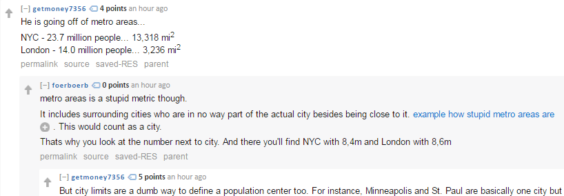

Victor Thibert
Computer Science and Statistics Student
McGill University // Montreal

Computer Science and Statistics Student
McGill University // Montreal
Website: cherrypicker.io
Github repo: github.com/VictorThibert/cherrypicker.io
Collaborators: Laurence Li (check him out) and Victor Thibert

Description: This is an ongoing project, and I see myself contributing to it indefinitely. Basketball stats galore!
I wrote this guide because not enough Canadians know about the Tax Free Savings Account that recently launched in 2009. It was intended to help provide tax benefits to lower income earners in Canada, but unfortunately only 38% of Canadians have even opened a TFSA. Even worse, is that the rules regarding the TFSA can be quite confusing and I was not able to find many user-friendly guides out there. I decided to create my own and if even one person decides to make use of a TFSA, then I will consider my mission a success.
Website: tfsa.cherrypicker.io
Github repo: github.com/VictorThibert/tfsa.cherrypicker.io
Collaborators: Charlene Wang, Robin Bandzar, and Victor Thibert
Neat! A guide!

Oh god.

It doesn't need to be this complicated..
Author: Victor Thibert
I see conversations like this way too often:
Motivation: I've found that people often use population numbers to make assertions about certain cities (e.g. whether they could support an expansion NBA team, the size of the real estate market, etc.) which I am all for. The problem is that there are many ways of evaluating a city's true size, none of which I feel paint the true picture (the most misleading of them being City Proper Population, which is based on historical and very arbitrary boundaries). You can see very quickly below how wildly the top US cities fluctuate in rank across the methodologies.

I am developing an algorithm that will standardize city population, eliminating the human element from the equation. My hope is that this will make for a better way of making cross-city comparisons.
Technical Details: Soon to be published once polished up! (Essentially, maximize city radius while maintain set population density)
Here are some of the projects I am most proud of.
Languages: Python • Java • Javascript • C
Web/Mobile: d3.js • HTML/CSS • React • Node.js
Data Science: R • Tensor Flow • scikit-learn • SQL • NumPy